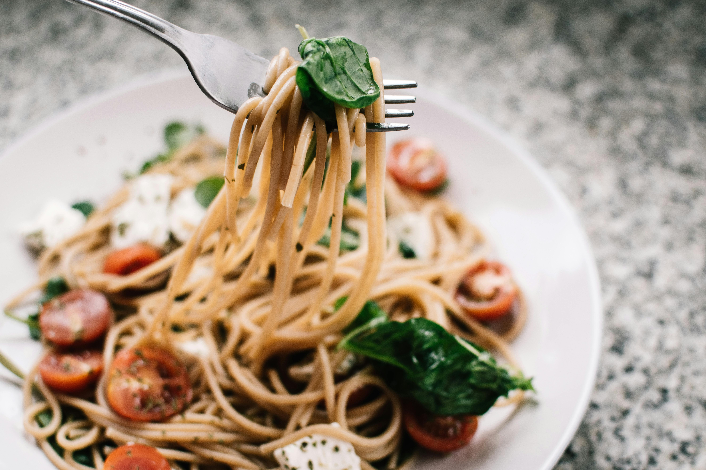
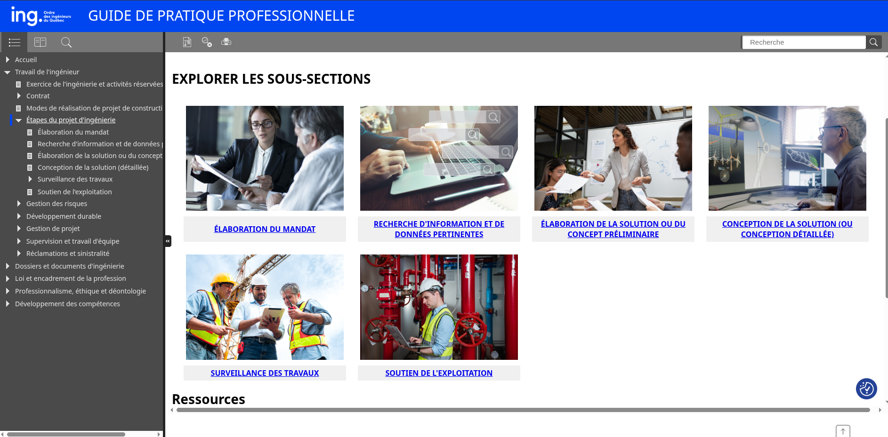
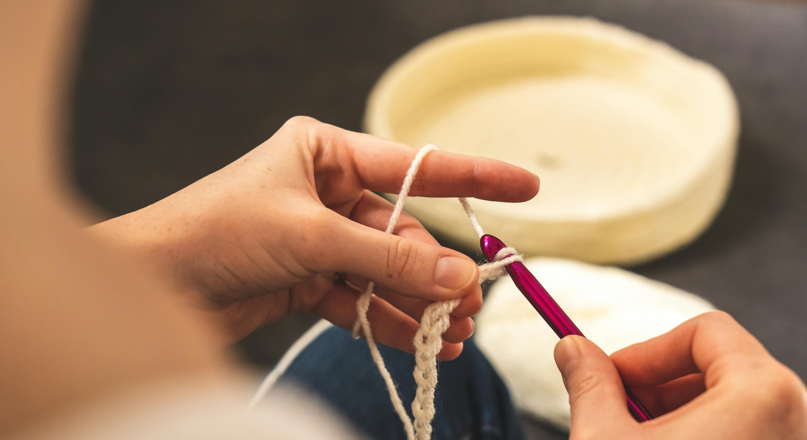

6 étapes
pour réussir votre prochain projet
par Antoine (@notkaramel)
Problème: Tu as faim
Problème: Tu veux des pâtes
Solution 1: Tu peux cuisiner, ou ...

Solution 2: Tu peux aller au restaurant
Tu décides!
Tu vas cuisiner!
Tu as besion d'ingrédients...
Tu as ...
- Des pâtes fettuccine
- Du parmesan
- Sauce Alfredo (tellement authentique)
- et d'autre choses
Tu peux avoir des pâtes fettucine Alfredo simples!
La dernière étape: goûter et vérifier s'il est très délicieux!
Réflexion: projet souper 🍝
On a ...
- Identifié le problème: "Tu as faim" & "Tu veux des pâtes"
- Évalué les solutions: Cuisiner vs. Aller au restaurant
- Planifié: analysé les ingrédients dans le frigo
- Réalisation: cuisiné des pâtes
- Validation: Goûté et vérifié s'il est délicieux
- Documenter la recette
On peut aussi...
Si on a un autre problème ?
Peut-on avoir des étapes similaires ?
Exemple:
- Notre problème: "Nous voulons aller sur la lune"
- Conception: Nous avons besoin d'une fusée 🚀
- Planification: des équipes pour chaque partie de la fusée, le budget, la gestion, etc.
- Réalisation: Recherche et fabrication de la fusée
- Validation: Nous faisons des tests.
- Nous documentons les résultats, collectons les données, etc.
6 étapes pour un projet réussi
- Analyse et compréhension du besoin
- Conception et modélisation
- Planification et gestion de projet
- Réalisation et mise en œuvre
- Tests et validation
- Communication et documentation
La méthodologie d'ingénierie
Le guide de practique professionel, l'Ordre des ingénieurs du Québec

https://asana.com/resources/agile-methodology
Application practique



Avantages
- Adaptable
- Approche systématique pour analyser, modéliser, et résoudre des problèmes complexes.
- Faciliter le travail en équipe et la transmission de l'information.
Inconvénients
- Très complexe pour les petits projets
- Peut bloquer les idées spontanées
- Peut prendre beaucoup de temps
En savoir plus ?
La présentation est disponible pour vous!
slides.antoinephan.com/method-ingenierie/